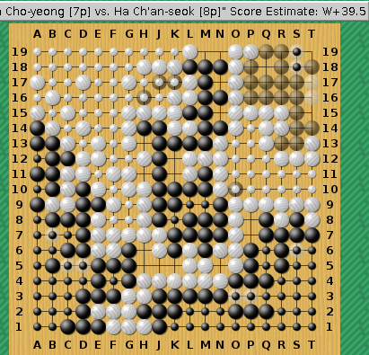
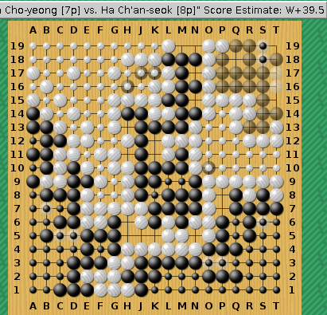
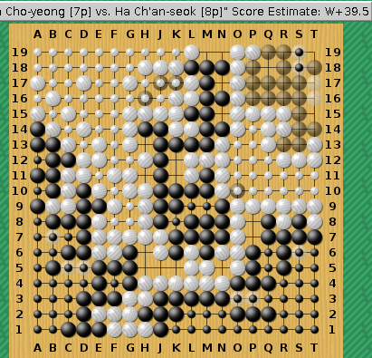

% sgfcount 106.sgf > /dev/null komi=6.5 bcaptct=6 wcaptct=9 result=W+2.5 B: 73+28=101, W: 77+20=97 for B: 4 minus komi in reality for B: 4 minus komi missing B territory: 0 ptsThis says that sgfcount agrees with the RE and KM information found in the SGF file. It also produces the above diagram, showing its opinion about the situation. One can also try GNU Go.
% gnugo --score estimate -l 106.sgf Black wins by 18.1 points % gnugo --score finish -l 106.sgf 2> /dev/null Black wins by 37.5 points Result from file: W+2.5 GNU Go result and result from file are different % gnugo --score aftermath -l 106.sgf 2> /dev/null Black wins by 37.5 points Result from file: W+2.5 GNU Go result and result from file are differentOf course the problem here is the black group on the left. It is dead, but GNU Go doesn't notice.

% sgfcount AnCho.sgf > /dev/null komi=6.5 bcaptct=12 wcaptct=13 result=W+0.5 B: 65+23=88, W: 66+16=82 for B: 6 minus komi in reality for B: 6 minus komi missing B territory: 0 pts % gnugo --score estimate -l AnCho.sgf White wins by 2.5 points % gnugo --score finish -l AnCho.sgf 2> /dev/null White wins by 0.5 points Result from file: W+0.5 GNU Go result and result from file are identicalSuccess for GNU Go, but the score estimator was wrong about the status of the upper right hand corner. It was also mistaken about the status of K19 and N5.
% sgfcount -coord 943.sgf > /dev/null komi=2.75 bcaptct=2 wcaptct=0 result=W+0.25 [Chinese, so full komi=5.5, result=W+0.5] B: 60+110+13=183, W: 56+109+13=178 (chinese) for B: 5 minus komi in reality for B: 5 minus komi missing B territory: 0 pts % gnugo --score finish -l 943.sgf 2> /dev/null Black wins by 0.2 points Result from file: W+0.2 GNU Go result and result from file are differentIt looks like GNU Go doesn't automatically assume that counts are in zi when quarter points are involved, and adding --chinese-rules doesn't help. Replace the 2.75 and 0.25 in the SGF file by 5.5 and 0.5 and try again.
% gnugo --score finish -l 943a.sgf 2> /dev/null White wins by 2.5 points Result from file: W+0.5 GNU Go result and result from file are differentHere the difference is because GNU Go played the ko fight at K19 and made W win it. (Under Chinese rules, whether it is useful or not to win a ko fight depends on parity and the number of dame. Capturing a ko is worth 2 points and provides an additional move, while occupying a dame point is worth 1 point. If the additional move goes to the opponent because he gets the final move, then the capture in ko did not help. If one gets the additional move oneself, the capture in ko did gain 2 points. Finally, if there are no more dame, then a capture in the last ko is worth 3 points, while the opponent would get 1 point by filling, so that the final ko fight in a situation without dame is a fight for 4 points.)
Is GNU Go right in its assessment that W wins these additional 2 points? Maybe B has ten threats (F18, O18, G16, C7, B1, H12, K9, R19, O10, T19) and W seven (B17, B13, L16, N6, M7, L2, G6). But those last two threats of B are no good since they open up further W threats, and G16 is not a good threat since it forces W to occupy a dame point. It may be that GNU Go is right.
aeb@cwi.nl